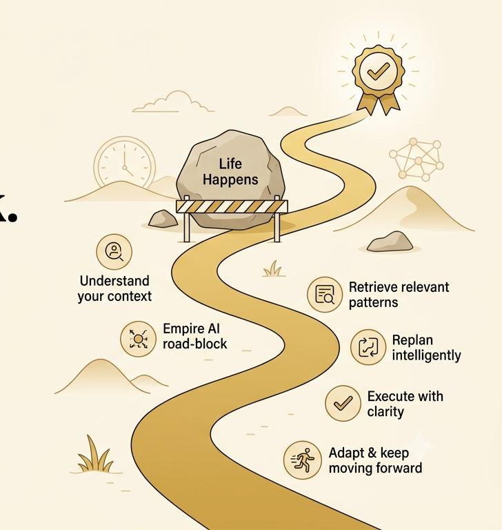
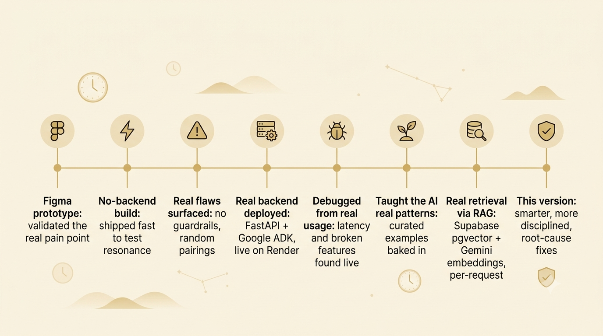
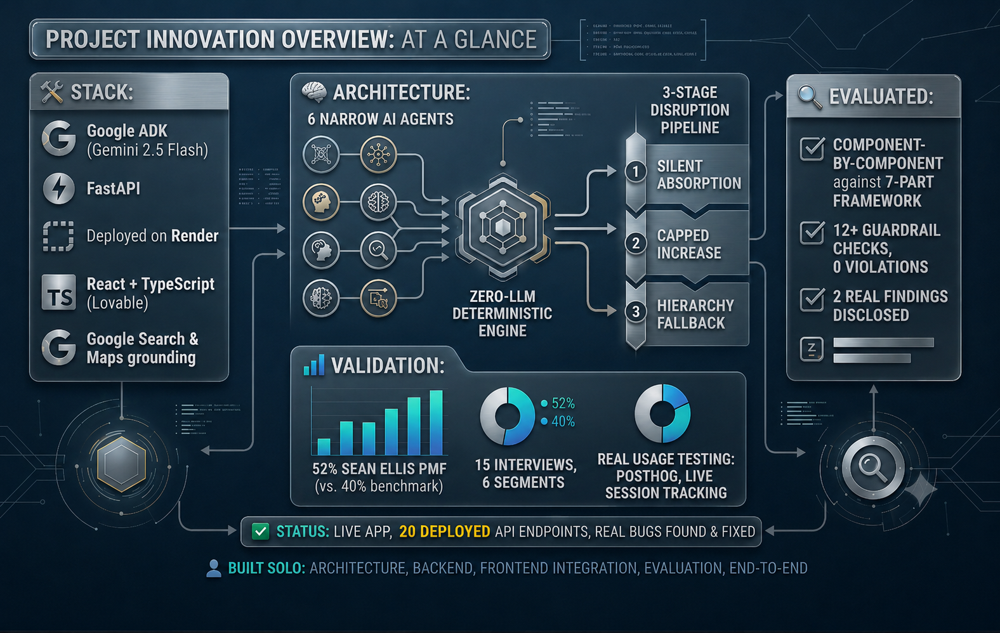
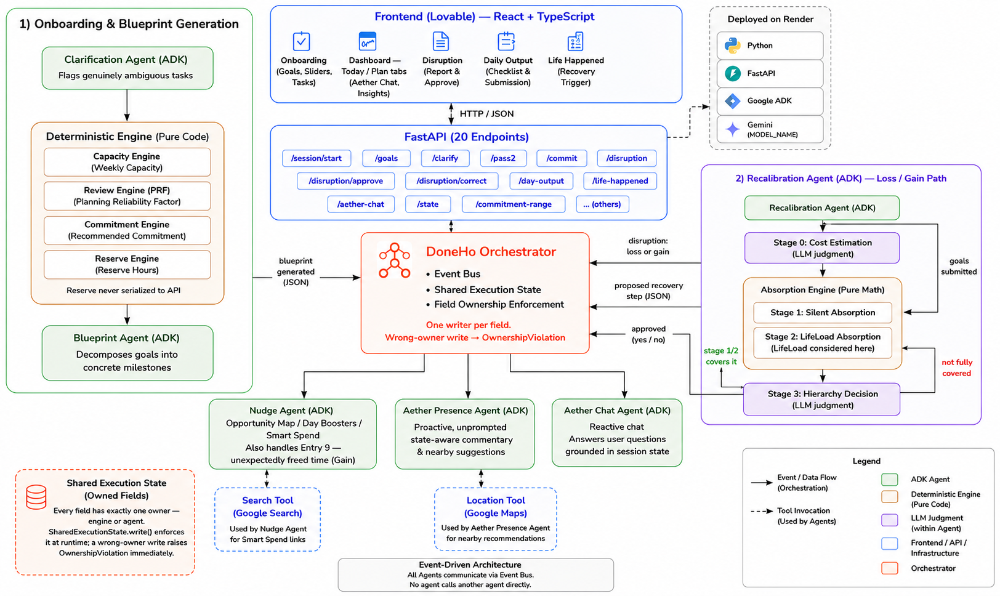

A 0-to-1 AI-agentic weekly execution system that protects your goals when life doesn't cooperate — from user research to deployed product, built and shipped solo.
Kaggle writeup = original submission. This page reflects iterations shipped since.

"The problem was never your discipline. It was the plan that expected a perfect week."
"Driving to office, release doc still blank. Didn't think of it until I was at my desk."
"Cleared prelims. Failed mains. Mother was hospitalised during prep. The plan didn't account for life."
"3 days locked in Delhi — hartal. Came back to 14 overdue tasks, zero plan for any of them."
"Bought a robotic cleaner. Still pick everything off the floor first. Found a ₹149 fix while paying the EMI."

Taxi drivers / gig workers: real early signal, deliberately out of v1 scope — they don't plan at all yet, a different product problem.
3 goals: exam prep, childcare, career. All real, all competing.
Logs it in one line: "sick kid today."
"Review NCERT Geography" — done in a prior sprint.
Evening check-in, honest about what didn't happen.
A missed task forces a full manual replan, or a guilt-laden streak break.
Zero-LLM engine calculates. Six narrow agents judge. Strictly separated.


"Not better for everyone — built for the user other tools left behind."
Aether Chat was fully non-functional — missing schema, missing method. Every call failed before reaching an LLM.
Hours input took the first number found, no unit-check. Rebuilt as tappable per-day options.
"Life Happened" silently failed without a same-day Day Output. Now auto-submits a full-miss day.
Search tool was optional per instructions — links often missing. Now mandatory for Smart Spend.
After 1 LifeLoad approval, Reserve marks fully used all week — even tiny disruptions need re-approval.
Building DoneHo taught me that successful AI products aren't defined by the sophistication of their models, but by how effectively they solve real user problems.